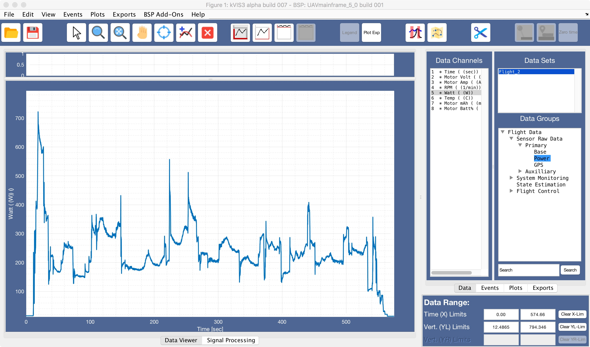

Save FDS:

Function: Opens an existing FDS file from disk. The data
format is upgraded to the default FDS format, if required.
Function: Save FDS file to user selected location.
Function: Enables context menus for each line in the plot (disables all other plot manipulation buttons).
Function: Enable Matlab zoom function. The right click
context menu has been customised with the following options:
Function: Zoom all axes to fit the plotted data global limits.
Function: Enables native Matlab pan function. Plot limits
are updated during pan operation.
Function: Enables native Matlab data cursor function
Function: Add lines to existing plot when depressed (‘hold on’) – applies to selected axis
Function: Clear and reset all axes